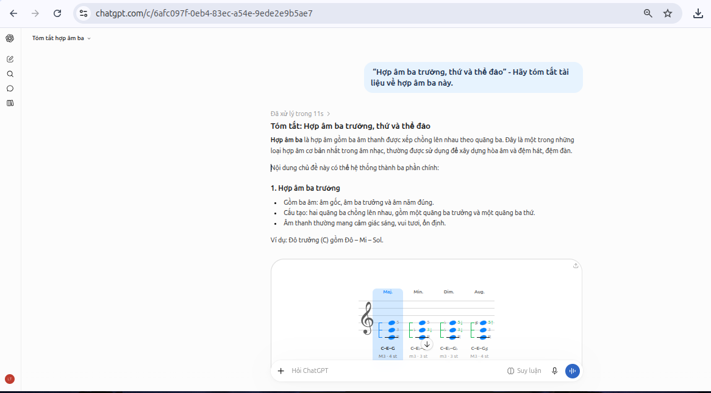
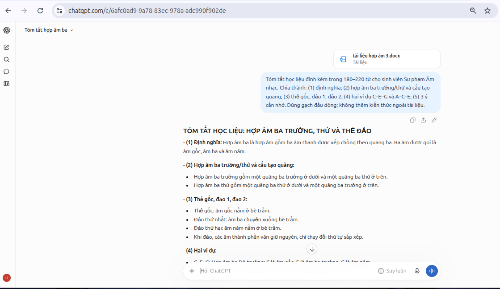
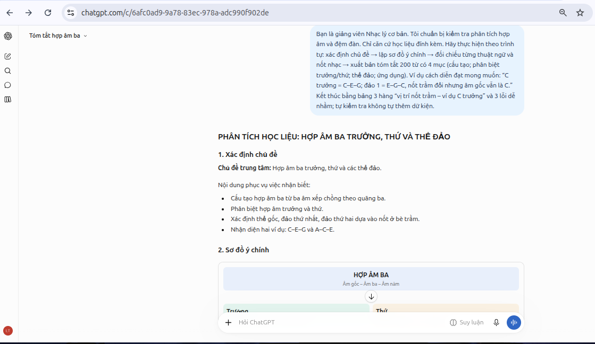
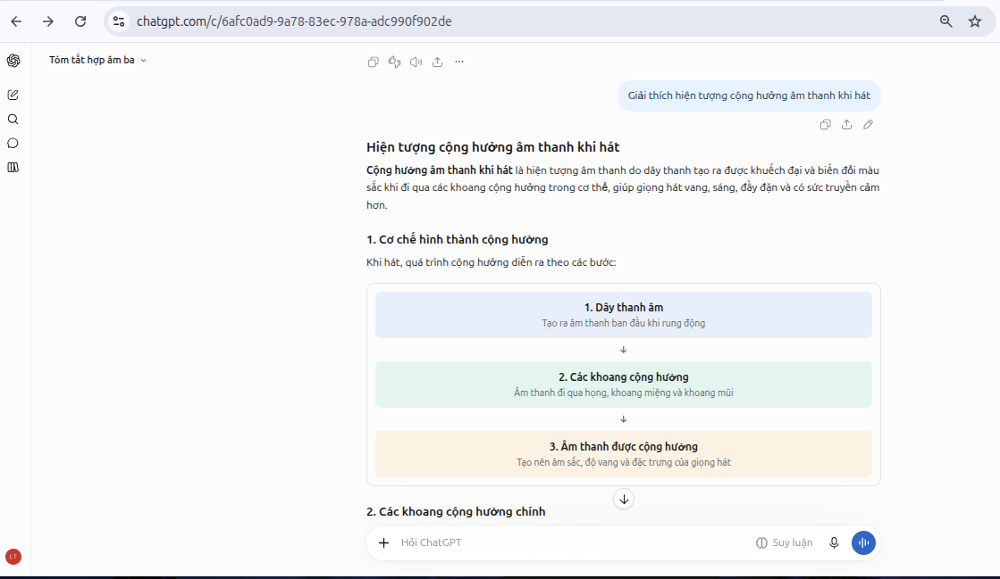
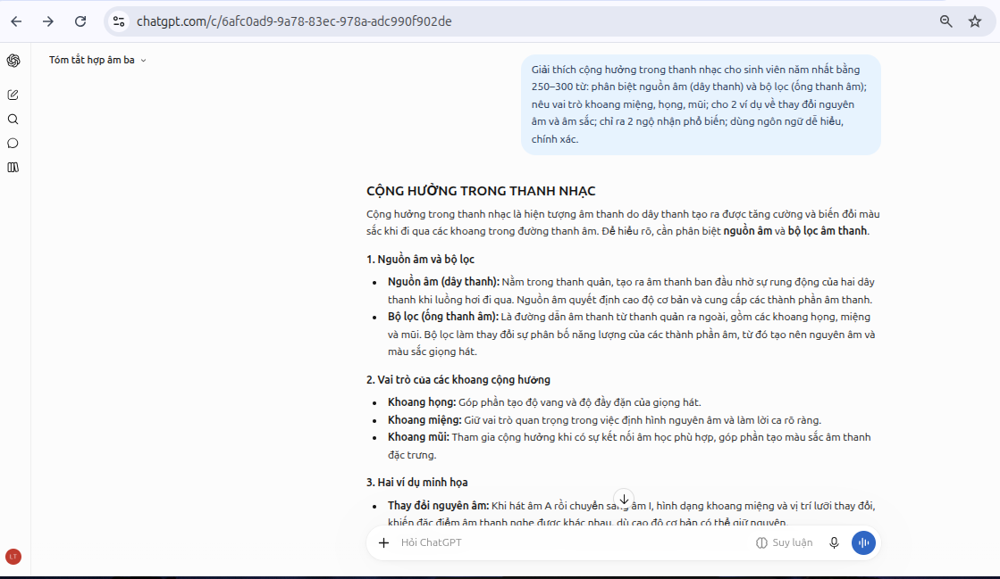
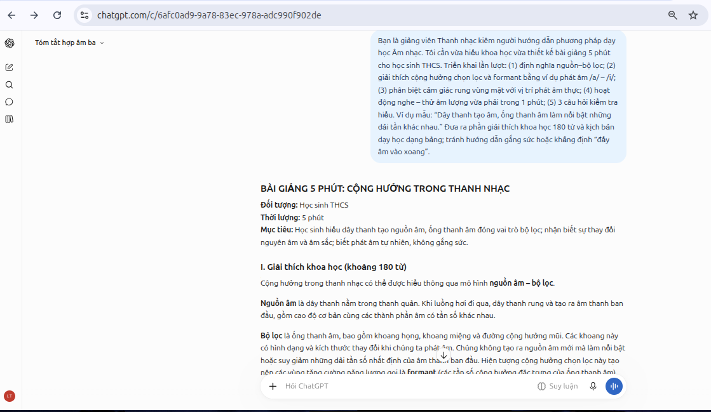
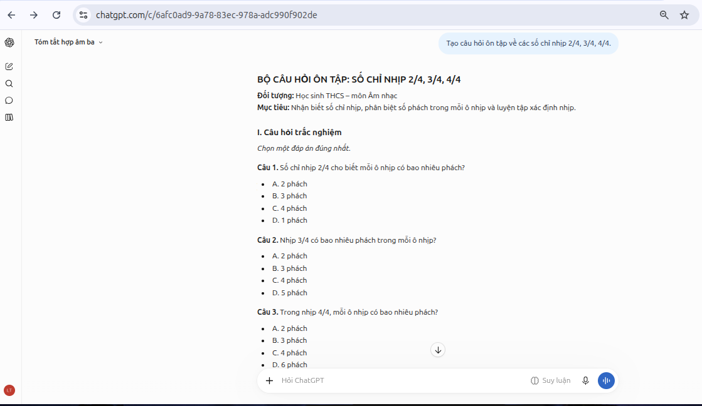
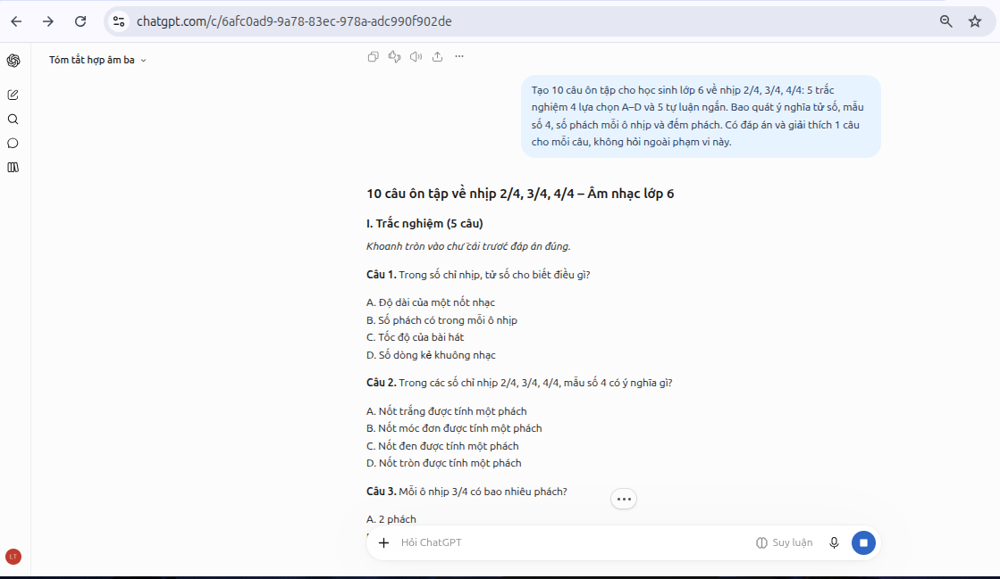
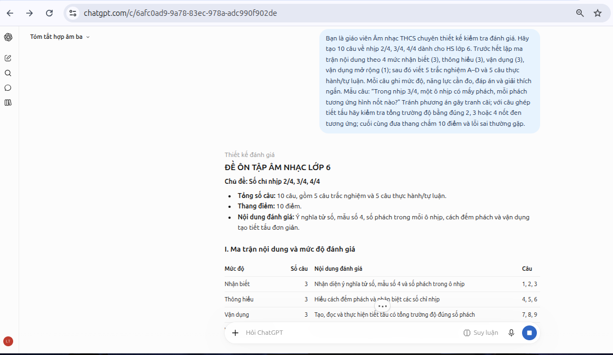

BÁO CÁO BÀI TẬP CHƯƠNG 3
PHÂN TÍCH HIỆU QUẢ CỦA CÁC KỸ THUẬT VIẾT PROMPT TRONG HỌC TẬP VÀ DẠY HỌC ÂM NHẠC
BÁO CÁO BÀI TẬP CHƯƠNG 3
PHÂN TÍCH HIỆU QUẢ CỦA CÁC KỸ THUẬT VIẾT PROMPT TRONG HỌC TẬP VÀ DẠY HỌC ÂM NHẠC
A. MỤC TIÊU, QUY TRÌNH VÀ LỰA CHỌN TÁC VỤ
Mục tiêu: Rèn luyện cách thiết kế câu lệnh AI theo ba mức (cơ bản – cải tiến – nâng cao); so sánh chất lượng đầu ra; từ đó ứng dụng AI đúng mục đích trong học Nhạc lý, Thanh nhạc và thiết kế hoạt động kiểm tra đánh giá ở trường phổ thông.
Quy trình: (1) Chọn cùng một nội dung đầu vào cho mỗi tác vụ; (2) viết 3 prompt với mức độ ràng buộc tăng dần; (3) chạy độc lập trên ChatGPT, lưu prompt và phản hồi; (4) đối chiếu bằng 4 tiêu chí.
| Tác vụ | Mục tiêu học tập | Thách thức và yêu cầu đầu ra |
|---|---|---|
| 1. Tóm tắt tài liệu hợp âm | Nắm cấu tạo hợp âm ba trưởng/thứ và hai thể đảo; ghi nhớ để đệm đàn, phân tích bản nhạc. | Không nhầm quãng 3 trưởng/thứ, âm gốc với nốt trầm; giữ đủ ví dụ nốt nhạc và ý cốt lõi. |
| 2. Giải thích cộng hưởng thanh nhạc | Hiểu mối liên hệ nguồn âm – bộ lọc ống thanh âm – cộng hưởng; biết diễn giải cho người học. | Tránh khẳng định sai rằng chỉ “hát vào đầu/ngực” là tạo âm; liên hệ thực hành an toàn. |
| 3. Tạo câu hỏi số chỉ nhịp | Thiết kế 10 câu ôn tập nhịp 2/4, 3/4, 4/4 cho HS lớp 6. | Cân bằng nhận biết–vận dụng, đáp án một nghĩa, ví dụ tiết tấu đúng số phách. |
B. XÂY DỰNG PHIÊN BẢN PROMPT
1. Tác vụ tóm tắt: “Hợp âm ba trưởng, thứ và thể đảo”
P1 – Cơ bản: Hãy tóm tắt tài liệu về hợp âm ba này.

P2 – Cải tiến: Tóm tắt học liệu đính kèm trong 180–220 từ cho sinh viên Sư phạm Âm nhạc. Chia thành: (1) định nghĩa; (2) hợp âm ba trưởng/thứ và cấu tạo quãng; (3) thể gốc, đảo 1, đảo 2; (4) hai ví dụ C–E–G và A–C–E; (5) 3 ý cần nhớ. Dùng gạch đầu dòng; không thêm kiến thức ngoài tài liệu.

P3 – Nâng cao: Bạn là giảng viên Nhạc lý cơ bản. Tôi chuẩn bị kiểm tra phân tích hợp âm và đệm đàn. Chỉ căn cứ học liệu đính kèm. Hãy thực hiện theo trình tự: xác định chủ đề → lập sơ đồ ý chính → đối chiếu từng thuật ngữ và nốt nhạc → xuất bản tóm tắt 200 từ có 4 mục (cấu tạo; phân biệt trưởng/thứ; thể đảo; ứng dụng). Ví dụ cách diễn đạt mong muốn: “C trưởng = C–E–G; đảo 1 = E–G–C, nốt trầm đổi nhưng âm gốc vẫn là C.” Kết thúc bằng bảng 3 hàng “vị trí nốt trầm – ví dụ C trưởng” và 3 lỗi dễ nhầm; tự kiểm tra không tự thêm dữ kiện.

2. Tác vụ giải thích: “Cộng hưởng âm thanh trong thanh nhạc”
P1 – Cơ bản: Giải thích hiện tượng cộng hưởng âm thanh khi hát.

P2 – Cải tiến: Giải thích cộng hưởng trong thanh nhạc cho sinh viên năm nhất bằng 250–300 từ: phân biệt nguồn âm (dây thanh) và bộ lọc (ống thanh âm); nêu vai trò khoang miệng, họng, mũi; cho 2 ví dụ về thay đổi nguyên âm và âm sắc; chỉ ra 2 ngộ nhận phổ biến; dùng ngôn ngữ dễ hiểu, chính xác.

P3 – Nâng cao: Bạn là giảng viên Thanh nhạc kiêm người hướng dẫn phương pháp dạy học Âm nhạc. Tôi cần vừa hiểu khoa học vừa thiết kế bài giảng 5 phút cho học sinh THCS. Triển khai lần lượt: (1) định nghĩa nguồn–bộ lọc; (2) giải thích cộng hưởng chọn lọc và formant bằng ví dụ phát âm /a/ – /i/; (3) phân biệt cảm giác rung vùng mặt với vị trí phát âm thực; (4) hoạt động nghe – thử âm lượng vừa phải trong 1 phút; (5) 3 câu hỏi kiểm tra hiểu. Ví dụ mẫu: “Dây thanh tạo âm, ống thanh âm làm nổi bật những dải tần khác nhau.” Đưa ra phần giải thích khoa học 180 từ và kịch bản dạy học dạng bảng; tránh hướng dẫn gắng sức hoặc khẳng định “đẩy âm vào xoang”.

3. Tác vụ tạo câu hỏi: “Số chỉ nhịp 2/4, 3/4, 4/4”
P1 – Cơ bản: Tạo câu hỏi ôn tập về các số chỉ nhịp 2/4, 3/4, 4/4.

P2 – Cải tiến: Tạo 10 câu ôn tập cho học sinh lớp 6 về nhịp 2/4, 3/4, 4/4: 5 trắc nghiệm 4 lựa chọn A–D và 5 tự luận ngắn. Bao quát ý nghĩa tử số, mẫu số 4, số phách mỗi ô nhịp và đếm phách. Có đáp án và giải thích 1 câu cho mỗi câu, không hỏi ngoài phạm vi này.

P3 – Nâng cao: Bạn là giáo viên Âm nhạc THCS chuyên thiết kế kiểm tra đánh giá. Hãy tạo 10 câu về nhịp 2/4, 3/4, 4/4 dành cho HS lớp 6. Trước hết lập ma trận nội dung theo 4 mức nhận biết (3), thông hiểu (3), vận dụng (3), vận dụng mở rộng (1); sau đó viết 5 trắc nghiệm A–D và 5 câu thực hành/tự luận. Mỗi câu ghi mức độ, năng lực cần đo, đáp án và giải thích ngắn. Mẫu câu: “Trong nhịp 3/4, một ô nhịp có mấy phách, mỗi phách tương ứng hình nốt nào?” Tránh phương án gây tranh cãi; với câu ghép tiết tấu hãy kiểm tra tổng trường độ bằng đúng 2, 3 hoặc 4 nốt đen tương ứng; cuối cùng đưa thang chấm 10 điểm và lỗi sai thường gặp.

C. THỬ NGHIÊM VÀ SO SÁNH KẾT QUẢ
| Tác vụ | Prompt cơ bản – biểu hiện đầu ra | Prompt cải tiến – biểu hiện đầu ra | Prompt nâng cao – biểu hiện đầu ra |
|---|---|---|---|
| 1. Hợp âm | Có thể nói “hợp âm gồm 3 âm” nhưng lược mất cấu tạo quãng và thể đảo. | Đủ định nghĩa, công thức 3 trưởng + 3 thứ / 3 thứ + 3 trưởng, ví dụ C–E–G, A–C–E. | Thêm sơ đồ nốt trầm C → E → G; đối chiếu không nhầm đảo hợp âm với đổi âm gốc. |
| 2. Cộng hưởng | Giải thích chung “âm được khuếch đại”, dễ dùng ngôn ngữ mơ hồ. | Phân tách dây thanh và các khoang cộng hưởng; nêu ví dụ thực hành. | Giải thích mô hình nguồn–bộ lọc, lưu ý cảm giác rung không phải vị trí tạo âm; có hoạt động sư phạm. |
| 3. Số chỉ nhịp | Có thể chỉ nêu định nghĩa, số câu và mức khó thiếu ổn định. | Đúng 10 câu, 5 trắc nghiệm + 5 tự luận, có đáp án. | Có ma trận mức độ, câu vận dụng ghép trường độ và thang điểm; dễ đưa vào giáo án. |
1. Ví dụ kiểm tra chất lượng đầu ra
Ví dụ đúng ở tác vụ 1: “Hợp âm C trưởng thể gốc: C–E–G; đảo 1: E–G–C; đảo 2: G–C–E”. Ví dụ đúng ở tác vụ 2: “Dây thanh tạo phổ âm; hình dạng ống thanh âm làm thay đổi các dải tần được nhấn mạnh”. Ví dụ đúng ở tác vụ 3: “Nhịp 3/4: một ô nhịp gồm ba phách, mỗi phách bằng một nốt đen”.
2. Thang tiêu chí đánh giá (1–4 điểm/tiêu chí)
Độ chính xác: kiến thức, nốt nhạc, thuật ngữ và đáp án đúng; Độ đầy đủ: đủ ý cốt lõi; Tính rõ ràng/sư phạm: dễ học và phù hợp lứa tuổi; Tuân thủ: đúng số lượng, định dạng, giới hạn. Mỗi tiêu chí chấm 1–4: 1 = thiếu/sai nhiều; 2 = đạt một phần; 3 = đạt khá; 4 = đáp ứng tốt. Tổng tối đa 16.
| Tác vụ | Cơ bản | Cải tiến | Nâng cao | Nhận xét kiểm định |
|---|---|---|---|---|
| 1. Hợp âm | Đánh giá dự kiến: 7/16 | 12/16 | 15/16 | Cần đối chiếu từng nốt với đoạn nguồn. |
| 2. Cộng hưởng | Đánh giá dự kiến: 8/16 | 12/16 | 15/16 | Kiểm tra phân biệt cộng hưởng vật lý và mô hình nguồn–bộ lọc. |
| 3. Số chỉ nhịp | Đánh giá dự kiến: 7/16 | 13/16 | 15/16 | Kiểm tra từng phương án và tổng trường độ. |
D. PHÂN TÍCH HIU QUẢ CỦA CÁC KỸ THUẬT
1. Ràng buộc đầu ra: Prompt cải tiến quy định độ dài, cấu trúc, số câu và đáp án, nhờ đó giảm sự biến thiên. Chẳng hạn, yêu cầu “5 trắc nghiệm + 5 tự luận” kiểm soát trực tiếp hình thức bài kiểm tra; còn “tóm tắt 200 từ” chỉ hữu ích nếu vẫn giữ đúng cấu tạo quãng và ví dụ hợp âm.
2. Role prompting (gán vai trò): “Giảng viên Nhạc lý”, “giảng viên Thanh nhạc”, “giáo viên Âm nhạc THCS” tạo ngữ cảnh học thuật và sư phạm khác nhau. Giá trị không nằm ở danh xưng mà ở việc prompt nêu đối tượng, nhiệm vụ và độ sâu giải thích. Vai trò chuyên gia không bảo đảm câu trả lời luôn chính xác.
3. Chia quy trình theo bước (step-by-step prompting): Đầu ra dễ kiểm tra hơn khi yêu cầu AI phân loại nội dung, xử lý từng phần rồi kiểm tra. Ví dụ, với nhịp 3/4 phải hiểu số phách trước, tiếp đến mới xét tổng trường độ; với hợp âm, cần xác định âm gốc trước khi gọi tên thể đảo. Yêu cầu này định hướng cấu trúc lời giải, không chứng minh AI có “suy luận nội bộ” đáng tin cậy.
4. Few-shot prompting: Ví dụ mẫu ngắn như “C–E–G → E–G–C” hoặc câu hỏi nhịp 3/4 làm rõ đúng kiểu đầu ra mong muốn. Ví dụ phải chuẩn xác; ví dụ sai có thể khiến AI lặp lại lỗi. Khi đề bài yêu cầu phối hợp nhiều kỹ thuật, prompt nâng cao kết hợp vai trò, quy trình, mẫu và bước tự kiểm tra.
5. Góc nhìn phản biện: Prompt dài không tự động tốt hơn. Quá nhiều yêu cầu có thể khiến AI trả lời lan man, tự tạo thông tin ngoài học liệu hoặc phát sinh lỗi ký âm. Vì vậy cần đối chiếu giáo trình và có tiêu chí độc lập, đặc biệt khi dùng kết quả cho học sinh.
E. TỔNG HỢP NGUYÊN TẮC VÀ KẾT LUẬN
nguyên tắc thực hành: (1) nêu tác vụ bằng động từ cụ thể; (2) chỉ rõ người học; (3) cung cấp tài liệu gốc; (4) quy định phạm vi kiến thức; (5) yêu cầu định dạng đo được; (6) chỉ định vai trò chuyên môn khi có ích; (7) chia bài khó thành các bước; (8) cho một mẫu đầu ra đúng; (9) yêu cầu phát hiện lỗi/đối chiếu nguồn; (10) thử nghiệm, ghi bằng chứng và điều chỉnh dựa trên tiêu chí.
Kết luận: Với ba tác vụ học tập của ngành Sư phạm Âm nhạc, prompt có cấu trúc làm câu trả lời dễ sử dụng hơn so với yêu cầu chung chung; prompt nâng cao có tiềm năng hỗ trợ phân tích, giải thích và thiết kế đánh giá. Tuy nhiên hiệu quả thực tế chỉ được kết luận sau khi chạy thử và kiểm tra từng đầu ra. AI là công cụ hỗ trợ, không thay thế thẩm định chuyên môn và trách nhiệm sư phạm của sinh viên.
TÀI LIỆU THAM CHIẾU VÀ ĐỐI CHIẾU
[1] “Chương 3 – Bài tập: Viết prompt hiệu quả cho các tác vụ học tập”, tài liệu hướng dẫn bài tập do người học cung cấp (mục yêu cầu, rubric 10 điểm).